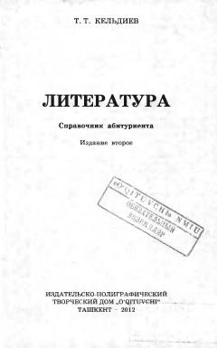

LSAbituriyentlar uchun rus va o'zbek adabiyoti bo'yicha mukammal qo'llanma.
Ushbu qo'llanma abituriyentlar uchun adabiyot nazariyasi, rus va o'zbek adabiyoti tarixi hamda yozuvchilar ijodi bo'yicha keng qamrovli ma'lumotlarni o'z ichiga oladi. Kitobda test sinovlariga tayyorgarlik ko'rish uchun nazariy tushunchalar, biografik ma'lumotlar va amaliy test topshiriqlari keltirilgan.